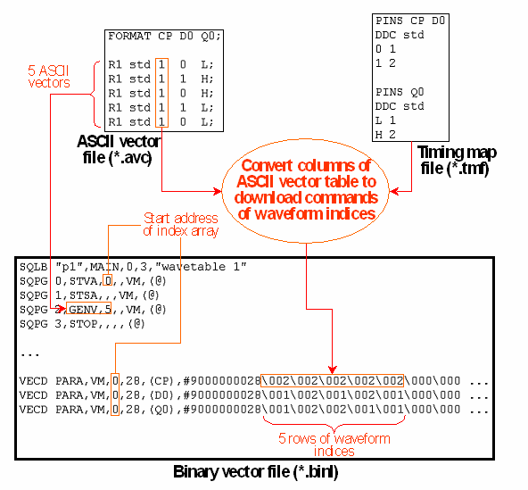
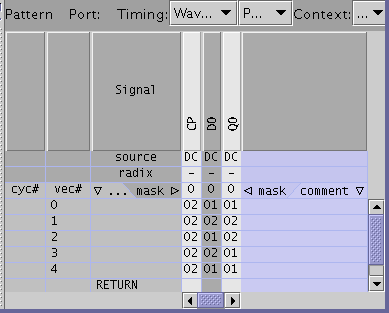

Example 1
The following figure illustrates the vector translation process for an ASCII vector file consisting only of the FORMAT statement and some parallel ASCII vectors.

Note that the nth row of the index array corresponds to the nth values of the download commands; thus, for example, the first row is 2 1 1. This is the way in which the data is shown in the pattern tool if you use a special base wavetable which uses the waveform DC/DC power units as the device cycle names. This was done in the following figure:
